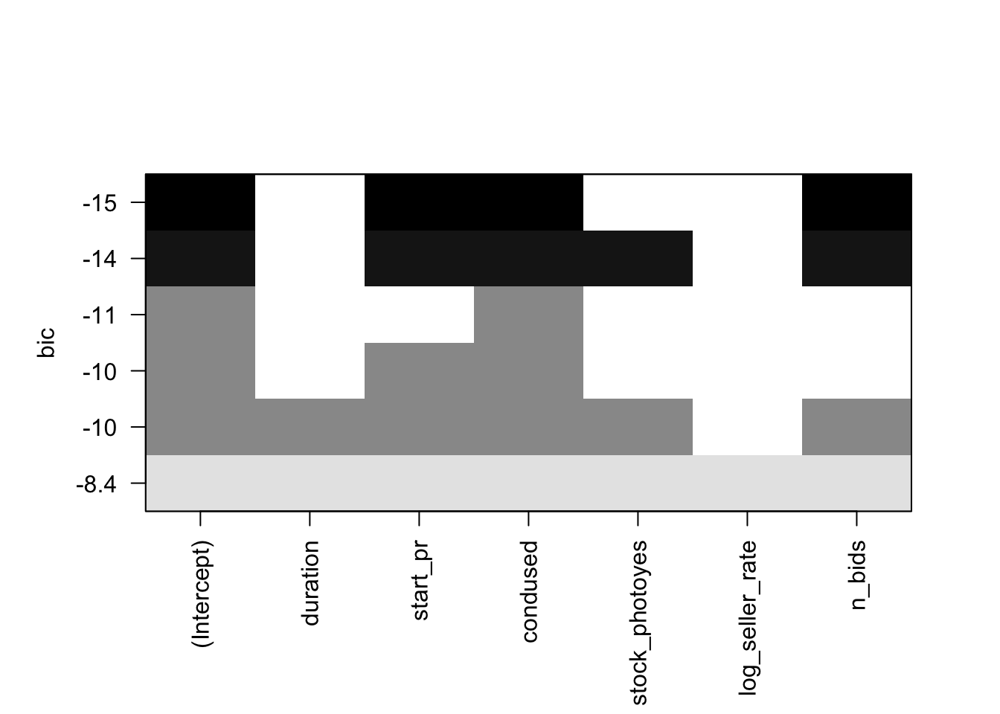

library(margins)knitr::opts_chunk$set(echo =TRUE, warning=FALSE, message=FALSE)library(sjPlot)library(marginaleffects)library(ggplot2)library(readr)library(openintro) #this is where the data set is hostedlibrary(leaps)library(dplyr)library(gridExtra)library(flexmix)
Introduction
Understanding the effects of different variables on total selling price can help online vendors make decisions on how to list their products in order to sell them at the highest possible price point. I plan to examine what factors really impact the total selling price of Nintendo Wii Mario Kart games in Ebay auctions?
The data set I was working with from a website of data sets that were easily interchangeable with RStudio. Data is from 143 observations of Nintendo Wii Mario Kart auctions on Ebay that was collected October 2009. The data set has 12 descriptive variables composed of characteristics that are controlled by the seller ( e.g., starting price, condition of the item,duration of the auction) and response variables (e.g., number of bids, total price) for all auctions.
Dataset Introduction:
The data set covers 143 observations of Ebay auctions made in one week. Auctions were included in the data set if they satisfied a series of conditions. Some factors were: if the auction did not end with a “Buy It Now” option, if the auction was listed in the Nintendo Wii section of Ebay, and if the item was being sold from the US etc. In my work I was most interested in which factors made for higher a total selling price of some auctions than others. After using the head function, I came to the conclusion that the variables that hold the most that the variables I am most interested in are duration (auction length in days), number of bids, condition (used/new), start price (USD) and total price. In future work I only use those variables of interest.
Data Visualization
After using the head function I came to the conclusion that the variables that hold the most that the variables I am most interested in are duration (auction length in days), number of bids, condition (used/new), start price (USD) and total price. I disregarded variables such as ID, number of wheels, and Title to strengthen and simplify the findings.
Code
ebay <- mariokartdim(ebay)
[1] 143 12
Code
summary(ebay)
id duration n_bids cond
Min. :1.104e+11 Min. : 1.000 Min. : 1.00 new :59
1st Qu.:1.404e+11 1st Qu.: 1.000 1st Qu.:10.00 used:84
Median :2.205e+11 Median : 3.000 Median :14.00
Mean :2.235e+11 Mean : 3.769 Mean :13.54
3rd Qu.:2.954e+11 3rd Qu.: 7.000 3rd Qu.:17.00
Max. :4.001e+11 Max. :10.000 Max. :29.00
start_pr ship_pr total_pr ship_sp
Min. : 0.010 Min. : 0.000 Min. : 28.98 standard :33
1st Qu.: 0.990 1st Qu.: 0.000 1st Qu.: 41.17 upsGround :31
Median : 1.000 Median : 3.000 Median : 46.50 priority :23
Mean : 8.777 Mean : 3.144 Mean : 49.88 firstClass:22
3rd Qu.:10.000 3rd Qu.: 4.000 3rd Qu.: 53.99 parcel :16
Max. :69.950 Max. :25.510 Max. :326.51 media :14
(Other) : 4
seller_rate stock_photo wheels
Min. : 0 no : 38 Min. :0.000
1st Qu.: 109 yes:105 1st Qu.:0.000
Median : 820 Median :1.000
Mean : 15898 Mean :1.147
3rd Qu.: 4858 3rd Qu.:2.000
Max. :270144 Max. :4.000
title
BRAND NEW NINTENDO MARIO KART WITH 2 WHEELS :23
Mario Kart Wii (Wii) :19
BRAND NEW NINTENDO 1 WII MARIO KART WITH 2 WHEELS +GAME: 8
Mario Kart Wii (GAME ONLY/NO WHEEL) - Nintendo Wii Game: 4
Mario Kart Wii (Wii) Nintendo Wii game *--WOW --AWESOME: 4
(Other) :84
NA's : 1
The case of this data set is an individual auction of a Mario Kart Wii game represented by each row in the data set. The data set is composed of characteristics that are controlled by the seller ( e.g., starting price, condition of the item,duration of the auction) and response variables (e.g., number of bids, total price) for all auctions (143).
Through calculating summary statistics of my variables of interest, what stood out the most was total price. The maximum total price was 326.51 dollars which was more than 5 times the highest starting price. This was odd to because the mean total price was 49.88 dollars. The substantial jump in total price level interested me to look further into the category and tipped me off to the presence of outliers within the category. I went on to apply a logarithmic transformation (log of seller rate and log of total price) with hopes of removing the outliers. I applied transformations to those two and then was able to assume the conditions of regression are met and move on with further visualization and analysis.
Error in ggpairs(ebay_transformed %>% select(duration, n_bids, cond, start_pr, : could not find function "ggpairs"
I chose to apply a log transformation to seller rate and total price as seller rate in attempts to normalize the results. Similar to total price, seller rate had odd summary statistics and my interest was piqued. The mean seller rate was 15898.42 meaning that the average seller rate had 15898.42 positive ratings. The wide spread distribution (shown by the gray bin of the residual graph) comes from the standard deviation of 51840.32 positive reviews. The very high standard deviation meas that there is an incredibly wide spread of data and indicates that a transformation may be a useful tool to normalize the results.Pre-transformation, the data was too cluttered and confusing for clear conclusions to be reached. Post transformation the skewed original data is much more normal. It improved linearity between seller rate and total price as seen in the now significant correlation between total price and duration.
As a result of the improved linearity and correlation, I feel much more confident in mapping marginal effects of coefficients to assess correlation between my variables of interest and the now logged total price. <<<<<<< HEAD
I used marginal effects to best plot the interaction of my variables of interest on total price. When I apply the “margins” function, it calculates the marginal effect of between coefficients of interests. In this case it will calculate the marginal effects of variables: duration of auction, starting price condition of item, number of bids and number of bids.
I began by calculating the marginal effects between condition of the listing and total price. If the item was listed as being used it had a marginal effect of -0.194 on total price. When examining the visual effects of condition on total price, we see items listed as new were significantly higher than those listed as used. The marginal effect of -0.194 is consistent with the significantly lower predicted total price for those items that were listed as being used opposed to the higher priced new condition listings.
The chart shows fairly insignificant levels of correlation between starting price and duration of the bid, but a significant level of correlation between the starting price and the number of bids. The plot shows the predicted values for the response at each value for the term “duration”. I plotted the marginal effect of auction duration against logged total price. Visually there is a weak negative correlation with a very wide bin of distribution between auction duration and log total price. In the plot, as the duration of the auction nearly doubles (from 2.5 to 5.0), predicted total price only decreased by less than 0.05. There is not a truly substantial change in total price with changes in log total price. The margins formula results also comes to similar conclusions as there is a marginal effect of -0.0165 which means that as duration increases by one day total price decreases by -0.0165.
I used marginal effects to best plot the interaction of my variables of interest on total price. When I apply the “margins” function, it calculates the marginal effect of between coefficients of interests. In this case it will calculate the marginal effects of variables: duration of auction, starting price condition of item, number of bids and number of bids.
I began by calculating the marginal effects between condition of the listing and total price. If the item was listed as being used it had a marginal effect of -0.194 on total price. When examining the visual effects of condition on total price, we see items listed as new were significantly higher than those listed as used. The marginal effect of -0.194 is consistent with the significantly lower predicted total price for those items that were listed as being used opposed to the higher priced new condition listings.
The chart shows fairly insignificant levels of correlation between starting price and duration of the bid, but a significant level of correlation between the starting price and the number of bids.
The plot shows the predicted values for the response at each value for the term “duration”. I plotted the marginal effect of auction duration against logged total price. Visually there is a weak negative correlation with a very wide bin of distribution between auction duration and log total price. In the plot, as the duration of the auction nearly doubles (from 2.5 to 5.0), predicted total price only decreased by less than 0.05. There is not a truly substantial change in total price with changes in log total price. The margins formula results also comes to similar conclusions as there is a marginal effect of -0.0165 which means that as duration increases by one day total price decreases by -0.0165. >>>>>>> 380772c6fb7f4efc5c98fe07b48f33fd5c1dc2e3
I ran one last visualization between the variables n_bids and total price.
The chart shows a positive correlation between number of bids and total price. There is a tighter bin width than the previous plot of duration and total price. For each added bid, total price increased by 0.0142. This makes much logical sense as in order to add a bid onto an ebay auction, a bidder must raise the price. I was not surprised to see a somewhat compact and positive relationship between the number of bids and auctions. All the charts showed clear correlation between the variables, but I would be interested to see if any variables still exist within total price and possibly are contributing to the wider than expected standard deviations (as represented as wide bins/spreads in the plots ). Although the analyses post transformation was much stronger for visualization and hopefully move forward with regression, it still seemed like there were outliers that were skewing the results and so I decided to manually remove the outliers. In order to identify what the outliers exactly were and the influence of them I ran a test of Cooks Distance and Hat Values.
Error in `geom_point()`:
! Problem while computing aesthetics.
ℹ Error occurred in the 2nd layer.
Caused by error in `FUN()`:
! object 'obs_index' not found
Error in `geom_point()`:
! Problem while computing aesthetics.
ℹ Error occurred in the 1st layer.
Caused by error in `FUN()`:
! object 'obs_index' not found
The Cooks Distance test outlined two clear areas of influence that were negatively impacting the relationship of the data and a possible regression I may want to run. The two clear suspicions exist at the observation index of 20 and 65, so from here on out I made sure to manually remove them. I also used Hat Values to double check for outliers by measuring how distant a point it from its’ corresponding ‘fitted point’. The Hat Values indicated possible outliers at values 9, 20, 23, 65, 75, 84, 103, 115, and 131. I use this information to manually remove these points of concern (hereafter referred to as “suspicions”).
Error in `mutate()`:
ℹ In argument: `suspicious1 = obs_index %in% c(20, 65)`.
Caused by error in `obs_index %in% c(20, 65)`:
! object 'obs_index' not found
Error in ggpairs(ebay_transformed %>% filter(!suspicious2) %>% select(duration, : could not find function "ggpairs"
To get a final visualization of the effects of log total price upon my variables of interest I ran the ggpairs function again. This time there is much stronger significance between log total price and most other variables. The most significant correlation is between log total price and duration of the auction. There is a -0.354 correlation between log total price and duration of the auction. Meaning that as log total price increases the duration of the auction decreases significantly. Similarly to duration, there is a higher significance in starting price and log total price than before. After removing the Suspicious 2 (those found with the Hat Values method) there is a 0.297 correlation between starting price and log total price. Meaning that 29.7% of the variation between log total price of the auctions can be explained by the starting price of the auction. Although ordinarily a correlation coefficient(r-value) of 0.297 may be regarded as weak, the relationship was deemed a significant at the 0.05 level. When we compare this r-value to others for log total price, no other variable has as strong of a correlation. Take log seller rate for example, there is a 0.175 correlation between log total price and log seller rate. This light level of correlation means that 17.5 of the variation between log total price of the auctions can be explained by the log seller rate. After accounting for duration and start price, there was not significant evidence for a relationship between the other explanatory variables and total price. Based on the above ggpairs plot and correlation coefficients, it seems that there is the strong evidence of a positive association between total price, and start price, with a moderate negative association between duration and total price.
Statistics and Regression Set Up
To best set up for a regression I want to be sure I am selecting the strongest model to regress. I ran each regressions BIC individually to avoid confusion and began with Model 1 (full model)
#Plot the candidates modelscandidate_models1 <-regsubsets(log_total_pr ~ duration + start_pr + cond + stock_photo + log_seller_rate + n_bids, data = ebay_transformed)plot(candidate_models1)

I used the BIC metric to compare best fit for each of the models. Model 1 (the full model with no outliers removed) had the largest BIC value of 19.22. This is our model with all variables we want to check on the transformed scale. It indicates that adding variables “condused”, “log_total_price” and “start_pr” will likely be of value. Interestingly, it is the only model where n_bids is significant, however I disregard the full model as it has a very high BIC which is indicative of a poor fit, and chose to move forward with the second model
Code
#Filter out major outliers - 2 different subsetslm_fit_2 <-lm(log_total_pr ~ duration + start_pr + cond + stock_photo + log_seller_rate + n_bids, data = ebay_transformed %>%filter(!suspicious1))
Error in `filter()`:
ℹ In argument: `!suspicious1`.
Caused by error:
! object 'suspicious1' not found
Code
summary(lm_fit_2)
Error in h(simpleError(msg, call)): error in evaluating the argument 'object' in selecting a method for function 'summary': object 'lm_fit_2' not found
Error in `filter()`:
ℹ In argument: `!suspicious1`.
Caused by error:
! object 'suspicious1' not found
Code
plot(candidate_models2)
Error in h(simpleError(msg, call)): error in evaluating the argument 'x' in selecting a method for function 'plot': object 'candidate_models2' not found
I repeated the BIC process from above for Model 2 (model with 2 suspicious removed). Similar to the model before, this BIC indicates that the most impactful variables for the regression are “condused”, “totalprice”, “duration” and “startpr”. The BIC shows start price and condition to be most significant. Duration and bids were also significant, but to a lesser extent. N_Bids was only significant before the removal of outliers, but Stock photo and seller rate were not significant across either model.
Although I did not move forward with a regression,if I were to do so, I would run a linear regression with model two and hope that it would lend some interesting results and more concrete findings.
Conclusion
I’ve never really used R-studio before, so I wanted to select a data set that would keep me interested and engaged with the material. I have friends who are depop/ebay sellers who thrift goods and then resell them and wanted to gain insight in what effects selling price. The data set was made of 143 observations of Ebay auctions made in one week. I initially focused on the following variables: duration (auction length in days), number of bids, condition (used/new), start price (USD) and total price. Towards the end of my work my variables of interest changed, and I did so using BIC modeling. I shifted my focus to duration of auction, starting price and condition of item.
I began by mutating the data by applying a log transformation of the total price and seller rate which removed some skew and outliers but not all. I realized I had to do further work in modifying the data set so I worked to manually remove the data points. I created a full model (had no removal of outliers) and a second model (removed two suspicions) that allowed me to come to stronger and more accurate conclusions.
All of the models with the low BIC showed strong evidence of a positive association between total price, and start price, and the models with outliers removed showed moderate negative association between duration and total price (contradicting the literature), among listings similar to those in this study. The results were most significant when only the two outliers were removed, followed by multiple suspicious values being removed, and the full model showed the weakest significance. Regardless, after accounting for duration and start price, there was not significant evidence for a relationship between the other explanatory variables and total price.
The data contains a large proportion of outliers, so if I were to conduct the project again, I might look for another data set with a larger sample to help normalize the data set. I believe manually removing the outliers helped remove skew the data set and allow for me to run a regression later. It is possible that because the survey was conducted closely after the game released, demand for the game may have altered total price. If we were the designers, we might want to expand the sample selection to include other driving games released at a similar time. It is possible that factors like popularity impacted the final selling prices across games. For example, if “Mario Kart Wii” had different total price than “Asphalt:4” (a similar game introduced at the same time) we might assume demand for a game impacts total price. By only focusing on one game, it does not control for omitted variable bias and possible interaction between the variables.
References
Data set: R: Wii Mario Kart auctions from Ebay https://vincentarelbundock.github.io/Rdatasets/articles/data.html
R Packages: library(ggplot2) library(readr) library(openintro) library(leaps) library(dplyr) library(GGally)
Literature: Ariely, D., & Simonson, I. (2003). Buying, bidding, playing, or competing? value assessment and decision dynamics in online auctions. Journal of Consumer Psychology, 13(1), 113–123. https://doi.org/10.1207/153276603768344834
The R Graph Gallery- https://r-graph-gallery.com/
Wickham, H., & Grolemund, G. (2016). R for data science: Visualize, model, transform, tidy, and import data. OReilly Media.
Feng, Changyong, et al. “Log-Transformation and Its Implications for Data Analysis.” Shanghai Archives of Psychiatry, Apr. 2014, www.ncbi.nlm.nih.gov/pmc/articles/PMC4120293/#:~:text=The%20log%20transformation%20is%2C%20arguably,normal%20or%20near%20normal%20distribution
Source Code
---title: "Final Project: Rose Hoover"author: "Rose Hoover"description: "Project & Data Description"date: "05/21/2023"format: html: df-print: paged toc: true code-copy: true code-tools: true code-fold: true css: styles.csscategories: - final_Project_assignment_1 - final_project_data_descriptioneditor_options: chunk_output_type: console---```{r}#| label: setup#| warning: false#| message: falselibrary(margins)knitr::opts_chunk$set(echo =TRUE, warning=FALSE, message=FALSE)library(sjPlot)library(marginaleffects)library(ggplot2)library(readr)library(openintro) #this is where the data set is hostedlibrary(leaps)library(dplyr)library(gridExtra)library(flexmix)```## IntroductionUnderstanding the effects of different variables on total selling price can help online vendors make decisions on how to list their products in order to sell them at the highest possible price point. I plan to examine what factors really impact the total selling price of Nintendo Wii Mario Kart games in Ebay auctions?The data set I was working with from a website of data sets that were easily interchangeable with RStudio. Data is from 143 observations of Nintendo Wii Mario Kart auctions on Ebay that was collected October 2009. The data set has 12 descriptive variables composed of characteristics that are controlled by the seller ( e.g., starting price, condition of the item,duration of the auction) and response variables (e.g., number of bids, total price) for all auctions.Dataset Introduction:The data set covers 143 observations of Ebay auctions made in one week. Auctions were included in the data set if they satisfied a series of conditions. Some factors were: if the auction did not end with a “Buy It Now” option, if the auction was listed in the Nintendo Wii section of Ebay, and if the item was being sold from the US etc. In my work I was most interested in which factors made for higher a total selling price of some auctions than others. After using the head function, I came to the conclusion that the variables that hold the most that the variables I am most interested in are duration (auction length in days), number of bids, condition (used/new), start price (USD) and total price. In future work I only use those variables of interest. ## Data Visualization After using the head function I came to the conclusion that the variables that hold the most that the variables I am most interested in are duration (auction length in days), number of bids, condition (used/new), start price (USD) and total price. I disregarded variables such as ID, number of wheels, and Title to strengthen and simplify the findings.```{r}ebay <- mariokartdim(ebay)summary(ebay)head(ebay %>%select(duration, n_bids, cond, start_pr, seller_rate, stock_photo, total_pr))```The case of this data set is an individual auction of a Mario Kart Wii game represented by each row in the data set. The data set is composed of characteristics that are controlled by the seller ( e.g., starting price, condition of the item,duration of the auction) and response variables (e.g., number of bids, total price) for all auctions (143). Through calculating summary statistics of my variables of interest, what stood out the most was total price. The maximum total price was 326.51 dollars which was more than 5 times the highest starting price. This was odd to because the mean total price was 49.88 dollars. The substantial jump in total price level interested me to look further into the category and tipped me off to the presence of outliers within the category. I went on to apply a logarithmic transformation (log of seller rate and log of total price) with hopes of removing the outliers. I applied transformations to those two and then was able to assume the conditions of regression are met and move on with further visualization and analysis. ```{r, echo=FALSE}ebay_transformed <- ebay %>%mutate(log_total_pr =log(total_pr),log_seller_rate =log(seller_rate+1) )ggpairs(ebay_transformed %>%select(duration, n_bids, cond, start_pr, log_seller_rate, stock_photo, log_total_pr))+theme_bw()```I chose to apply a log transformation to seller rate and total price as seller rate in attempts to normalize the results. Similar to total price, seller rate had odd summary statistics and my interest was piqued. The mean seller rate was 15898.42 meaning that the average seller rate had 15898.42 positive ratings. The wide spread distribution (shown by the gray bin of the residual graph) comes from the standard deviation of 51840.32 positive reviews. The very high standard deviation meas that there is an incredibly wide spread of data and indicates that a transformation may be a useful tool to normalize the results.Pre-transformation, the data was too cluttered and confusing for clear conclusions to be reached. Post transformation the skewed original data is much more normal. It improved linearity between seller rate and total price as seen in the now significant correlation between total price and duration.As a result of the improved linearity and correlation, I feel much more confident in mapping marginal effects of coefficients to assess correlation between my variables of interest and the now logged total price. <<<<<<< HEADI used marginal effects to best plot the interaction of my variables of interest on total price. When I apply the "margins" function, it calculates the marginal effect of between coefficients of interests. In this case it will calculate the marginal effects of variables: duration of auction, starting price condition of item, number of bids and number of bids.```{r}data(ebay_transformed)x <-lm(log_total_pr ~ duration + start_pr + cond + stock_photo + log_seller_rate + n_bids, data = ebay_transformed)margins(x)plot_model(x, type ="pred", terms ="cond")```I began by calculating the marginal effects between condition of the listing and total price. If the item was listed as being used it had a marginal effect of -0.194 on total price. When examining the visual effects of condition on total price, we see items listed as new were significantly higher than those listed as used. The marginal effect of -0.194 is consistent with the significantly lower predicted total price for those items that were listed as being used opposed to the higher priced new condition listings.```{r}data(ebay_transformed)x <-lm(log_total_pr ~ duration + start_pr + cond + stock_photo + log_seller_rate + n_bids, data = ebay_transformed)plot_model(x, type ="pred", terms ="duration")```The chart shows fairly insignificant levels of correlation between starting price and duration of the bid, but a significant level of correlation between the starting price and the number of bids. The plot shows the predicted values for the response at each value for the term "duration". I plotted the marginal effect of auction duration against logged total price. Visually there is a weak negative correlation with a very wide bin of distribution between auction duration and log total price. In the plot, as the duration of the auction nearly doubles (from 2.5 to 5.0), predicted total price only decreased by less than 0.05. There is not a truly substantial change in total price with changes in log total price. The margins formula results also comes to similar conclusions as there is a marginal effect of -0.0165 which means that as duration increases by one day total price decreases by -0.0165.=======I used marginal effects to best plot the interaction of my variables of interest on total price. When I apply the "margins" function, it calculates the marginal effect of between coefficients of interests. In this case it will calculate the marginal effects of variables: duration of auction, starting price condition of item, number of bids and number of bids.```{r}data(ebay_transformed)x <-lm(log_total_pr ~ duration + start_pr + cond + stock_photo + log_seller_rate + n_bids, data = ebay_transformed)margins(x)plot_model(x, type ="pred", terms ="cond")```I began by calculating the marginal effects between condition of the listing and total price. If the item was listed as being used it had a marginal effect of -0.194 on total price. When examining the visual effects of condition on total price, we see items listed as new were significantly higher than those listed as used. The marginal effect of -0.194 is consistent with the significantly lower predicted total price for those items that were listed as being used opposed to the higher priced new condition listings.```{r}data(ebay_transformed)x <-lm(log_total_pr ~ duration + start_pr + cond + stock_photo + log_seller_rate + n_bids, data = ebay_transformed)plot_model(x, type ="pred", terms ="duration")```The chart shows fairly insignificant levels of correlation between starting price and duration of the bid, but a significant level of correlation between the starting price and the number of bids.The plot shows the predicted values for the response at each value for the term "duration". I plotted the marginal effect of auction duration against logged total price. Visually there is a weak negative correlation with a very wide bin of distribution between auction duration and log total price. In the plot, as the duration of the auction nearly doubles (from 2.5 to 5.0), predicted total price only decreased by less than 0.05. There is not a truly substantial change in total price with changes in log total price. The margins formula results also comes to similar conclusions as there is a marginal effect of -0.0165 which means that as duration increases by one day total price decreases by -0.0165.>>>>>>> 380772c6fb7f4efc5c98fe07b48f33fd5c1dc2e3I ran one last visualization between the variables n_bids and total price. ```{r}data(ebay_transformed)x <-lm(log_total_pr ~ duration + start_pr + cond + stock_photo + log_seller_rate + n_bids, data = ebay_transformed)plot_model(x, type ="pred", terms ="n_bids")```The chart shows a positive correlation between number of bids and total price. There is a tighter bin width than the previous plot of duration and total price. For each added bid, total price increased by 0.0142. This makes much logical sense as in order to add a bid onto an ebay auction, a bidder must raise the price. I was not surprised to see a somewhat compact and positive relationship between the number of bids and auctions. All the charts showed clear correlation between the variables, but I would be interested to see if any variables still exist within total price and possibly are contributing to the wider than expected standard deviations (as represented as wide bins/spreads in the plots ). Although the analyses post transformation was much stronger for visualization and hopefully move forward with regression, it still seemed like there were outliers that were skewing the results and so I decided to manually remove the outliers. In order to identify what the outliers exactly were and the influence of them I ran a test of Cooks Distance and Hat Values. ## Modifying for outliers ```{r}ebay_transformed <- ebay_transformed %>%mutate(obs_index =row_number(),h =hatvalues(fit_full),D =cooks.distance(fit_full) )ggplot(data = ebay_transformed, mapping =aes(x = obs_index, y = h)) +geom_hline(yintercept =2*7/nrow(ebay_transformed))+geom_point() +theme_bw()ggplot(data = ebay_transformed, mapping =aes(x = obs_index, y = D)) +geom_point() +theme_bw()```The Cooks Distance test outlined two clear areas of influence that were negatively impacting the relationship of the data and a possible regression I may want to run. The two clear suspicions exist at the observation index of 20 and 65, so from here on out I made sure to manually remove them. I also used Hat Values to double check for outliers by measuring how distant a point it from its' corresponding 'fitted point'. The Hat Values indicated possible outliers at values 9, 20, 23, 65, 75, 84, 103, 115, and 131. I use this information to manually remove these points of concern (hereafter referred to as "suspicions").```{r}ebay_transformed <- ebay_transformed %>%mutate(suspicious1 = obs_index %in%c(20, 65),suspicious2 = obs_index %in%c(9, 20, 23, 65, 75, 84, 103, 115, 131))ggpairs(ebay_transformed %>%filter(!suspicious1) %>%select(duration, n_bids, cond, start_pr, log_seller_rate, stock_photo, log_total_pr))+theme_bw()ggpairs(ebay_transformed %>%filter(!suspicious2) %>%select(duration, n_bids, cond, start_pr, log_seller_rate, stock_photo, log_total_pr))+theme_bw()```To get a final visualization of the effects of log total price upon my variables of interest I ran the ggpairs function again. This time there is much stronger significance between log total price and most other variables. The most significant correlation is between log total price and duration of the auction. There is a -0.354 correlation between log total price and duration of the auction. Meaning that as log total price increases the duration of the auction decreases significantly. Similarly to duration, there is a higher significance in starting price and log total price than before. After removing the Suspicious 2 (those found with the Hat Values method) there is a 0.297 correlation between starting price and log total price. Meaning that 29.7% of the variation between log total price of the auctions can be explained by the starting price of the auction. Although ordinarily a correlation coefficient(r-value) of 0.297 may be regarded as weak, the relationship was deemed a significant at the 0.05 level. When we compare this r-value to others for log total price, no other variable has as strong of a correlation. Take log seller rate for example, there is a 0.175 correlation between log total price and log seller rate. This light level of correlation means that 17.5 of the variation between log total price of the auctions can be explained by the log seller rate.After accounting for duration and start price, there was not significant evidence for a relationship between the other explanatory variables and total price. Based on the above ggpairs plot and correlation coefficients, it seems that there is the strong evidence of a positive association between total price, and start price, with a moderate negative association between duration and total price.## Statistics and Regression Set Up To best set up for a regression I want to be sure I am selecting the strongest model to regress. I ran each regressions BIC individually to avoid confusion and began with Model 1 (full model)```{r}#First Modellm_fit_1 <-lm(log_total_pr ~ duration + start_pr + cond + stock_photo + log_seller_rate + n_bids, data = ebay_transformed)summary(lm_fit_1)#Plot the candidates modelscandidate_models1 <-regsubsets(log_total_pr ~ duration + start_pr + cond + stock_photo + log_seller_rate + n_bids, data = ebay_transformed)plot(candidate_models1)``` I used the BIC metric to compare best fit for each of the models. Model 1 (the full model with no outliers removed) had the largest BIC value of 19.22. This is our model with all variables we want to check on the transformed scale. It indicates that adding variables “condused”, “log_total_price” and “start_pr” will likely be of value. Interestingly, it is the only model where n_bids is significant, however I disregard the full model as it has a very high BIC which is indicative of a poor fit, and chose to move forward with the second model```{r}#Filter out major outliers - 2 different subsetslm_fit_2 <-lm(log_total_pr ~ duration + start_pr + cond + stock_photo + log_seller_rate + n_bids, data = ebay_transformed %>%filter(!suspicious1))summary(lm_fit_2)p1 <-ggplot(data = ebay_transformed %>%filter(!suspicious1), mapping =aes(x = duration, y = resid)) +geom_point() +geom_smooth() +theme_bw()p2 <-ggplot(data = ebay_transformed %>%filter(!suspicious1), mapping =aes(x = start_pr, y = resid)) +geom_point() +geom_smooth() +theme_bw()p3 <-ggplot(data = ebay_transformed %>%filter(!suspicious1), mapping =aes(x = cond, y = resid)) +geom_point() +geom_smooth() +theme_bw()p4 <-ggplot(data = ebay_transformed %>%filter(!suspicious1), mapping =aes(x = stock_photo, y = resid)) +geom_point() +geom_smooth() +theme_bw()p5 <-ggplot(data = ebay_transformed %>%filter(!suspicious1), mapping =aes(x = log_seller_rate, y = resid)) +geom_point() +geom_smooth() +theme_bw()p6 <-ggplot(data = ebay_transformed %>%filter(!suspicious1), mapping =aes(x = n_bids, y = resid)) +geom_point() +geom_smooth() +theme_bw()p7 <-ggplot(data = ebay_transformed %>%filter(!suspicious1), mapping =aes(x = resid)) +geom_density() +theme_bw()grid.arrange(p1, p2, p3, p4, p5, p6, p7)candidate_models2 <-regsubsets(log_total_pr ~ duration + start_pr + cond + stock_photo + log_seller_rate + n_bids, data = ebay_transformed %>%filter(!suspicious1))plot(candidate_models2)```I repeated the BIC process from above for Model 2 (model with 2 suspicious removed). Similar to the model before, this BIC indicates that the most impactful variables for the regression are “condused”, “totalprice”, “duration” and “startpr”. The BIC shows start price and condition to be most significant. Duration and bids were also significant, but to a lesser extent. N_Bids was only significant before the removal of outliers, but Stock photo and seller rate were not significant across either model.Although I did not move forward with a regression,if I were to do so, I would run a linear regression with model two and hope that it would lend some interesting results and more concrete findings.## Conclusion I’ve never really used R-studio before, so I wanted to select a data set that would keep me interested and engaged with the material. I have friends who are depop/ebay sellers who thrift goods and then resell them and wanted to gain insight in what effects selling price. The data set was made of 143 observations of Ebay auctions made in one week. I initially focused on the following variables: duration (auction length in days), number of bids, condition (used/new), start price (USD) and total price. Towards the end of my work my variables of interest changed, and I did so using BIC modeling. I shifted my focus to duration of auction, starting price and condition of item. I began by mutating the data by applying a log transformation of the total price and seller rate which removed some skew and outliers but not all. I realized I had to do further work in modifying the data set so I worked to manually remove the data points. I created a full model (had no removal of outliers) and a second model (removed two suspicions) that allowed me to come to stronger and more accurate conclusions.All of the models with the low BIC showed strong evidence of a positive association between total price, and start price, and the models with outliers removed showed moderate negative association between duration and total price (contradicting the literature), among listings similar to those in this study. The results were most significant when only the two outliers were removed, followed by multiple suspicious values being removed, and the full model showed the weakest significance. Regardless, after accounting for duration and start price, there was not significant evidence for a relationship between the other explanatory variables and total price. The data contains a large proportion of outliers, so if I were to conduct the project again, I might look for another data set with a larger sample to help normalize the data set. I believe manually removing the outliers helped remove skew the data set and allow for me to run a regression later. It is possible that because the survey was conducted closely after the game released, demand for the game may have altered total price. If we were the designers, we might want to expand the sample selection to include other driving games released at a similar time. It is possible that factors like popularity impacted the final selling prices across games. For example, if “Mario Kart Wii” had different total price than “Asphalt:4” (a similar game introduced at the same time) we might assume demand for a game impacts total price. By only focusing on one game, it does not control for omitted variable bias and possible interaction between the variables. ## References Data set:R: Wii Mario Kart auctions from Ebayhttps://vincentarelbundock.github.io/Rdatasets/articles/data.html R Packages:library(ggplot2)library(readr)library(openintro)library(leaps)library(dplyr)library(GGally)Literature:Ariely, D., & Simonson, I. (2003). Buying, bidding, playing, or competing? value assessment and decision dynamics in online auctions. Journal of Consumer Psychology, 13(1), 113–123. https://doi.org/10.1207/153276603768344834The R Graph Gallery- https://r-graph-gallery.com/ Wickham, H., & Grolemund, G. (2016). R for data science: Visualize, model, transform, tidy, and import data. OReilly Media.Feng, Changyong, et al. “Log-Transformation and Its Implications for Data Analysis.” Shanghai Archives of Psychiatry, Apr. 2014, www.ncbi.nlm.nih.gov/pmc/articles/PMC4120293/#:~:text=The%20log%20transformation%20is%2C%20arguably,normal%20or%20near%20normal%20distribution